전파전자통신기사 (2013-03-17 기출문제)
1과목: 디지털전자회로
1. 다음 회로에서 제너다이오드의 특성으로 옳은 것은? (단, Vs는 제너다이오드의 동작을
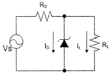
- 일정한 신호를 증폭시킨다.
- 사용하기 적당한 교류전압으로 변환한다.
- 리플 성분을 제거시킨다.
- 일정한 직류 출력전압을 제공한다.
(정답률: 50%)

2. 다음 그림은 수정진동자의 등가회로를 나타내었다. 수정진동자의 직렬 공진주파수는?
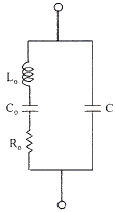
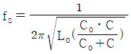
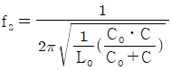
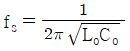
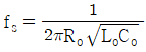
(정답률: 69%)
3. 아래의 괄호 안에 들어갈 알맞은 답을 앞에서부터 순서에 맞게 나열한 것은?
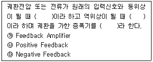
- ㉮㉯㉰
- ㉯㉰㉮
- ㉰㉮㉯
- ㉰㉯㉮
(정답률: 77%)
4. 다음 중 슬라이서 회로에 대한 설명으로 옳은 것은?
- 입력전압이 어느 기준 레벨 이하일 때 출력을 증강시키는 회로
- 압력이 어느 레벨 이상이 될 때 깎아내어 레벨을 낮추는 회로
- 입력 파형을 일정 레벨로 고정시키는 회로
- 서로 반대 방향으로 바이어스된 클리퍼를 연속 연결한 회로
(정답률: 40%)
5. 일정시간 동안 200개의 비트가 전송되고, 전송된 비트 중 15개의 비트에 오류가 발생하면 비트 에러율(BER)은?
- 7.5(%)
- 15(%)
- 30(%)
- 40.5(%)
(정답률: 70%)
6. 다음의 진리표에 해당하는 논리회로도는?
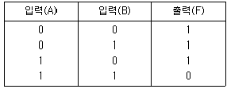
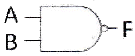
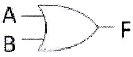
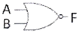
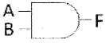
(정답률: 72%)
7. 무부하시의 직류 전압이 300(V)이고, 전부하시 직류 출력 전압이 250(V) 였다면 전압 변동률은?
- 10(%)
- 20(%)
- 30(%)
- 40(%)
(정답률: 75%)
8. 다음 중 증폭기에 대한 설명으로 알맞은 것은?
- 교류(AC)를 직류(DC)로 바꾸는 여러 과정 가운데 맥류를 완전한 직류로 바꾸어 준다.
- 입력의 신호변화가 출력단에 확대되어 나타난다.
- 교류 성분을 직류성분으로 변환하기 위한 전기 회로이다.
- 다이오드를 사용하여 교류 전압원의 (*)또는 (-)의 반 사이클을 정하고, 부하에 직류 전압을 흘리도록 한다.
(정답률: 77%)
9. 전파 중간탭 정류기를 이용한 전파정류회로에서 맥동률에 대한 설명으로 옳지 않은 것은?
- 주파수에 비례한다.
- 부하저항에 반비례한다.
- 콘덴서 C에 정전용량에 반비례한다.
- 부하저항과 정전용량의 곱에 반비례한다.
(정답률: 36%)
10. 그림과 같은 논리 회로는?
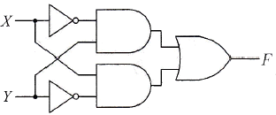
- XOR
- XNOR
- AND
- OR
(정답률: 54%)
11. 수정발진기는 임피던스가 어떤 조건일 때 가장 안정된 발진을 하는가?
- 저항성
- 용량성
- 유도성
- 유도성과 용량성 결합
(정답률: 67%)
12. 다음 중 병렬 클리핑 회로에서 클리핑 특성을 좋게 하기 위하여 사용되는 저항 R의 조건으로 옳은 것은? (단, Rd는 다이오드의 순방향 저항이다.)
- R=Rd
- R=1/Rd
- R＜Rd
- R≫Rd
(정답률: 77%)
13. 10진 BCD코드를 LED출력으로 표시하려면 어떤 디코더 드라이브가 필요한가?
- BCD-10세그먼트
- Octal-10세그먼트
- BCD-7세그먼트
- Octal-7세그먼트
(정답률: 75%)
14. 다음 중 특정 비트의 값을 무조건 0으로 바꾸는 연산은?
- XOR연산
- 선택적-세트(selective-set)연산
- 선택적-보수(selective-complement) 연산
- 마스크(mask) 연산
(정답률: 79%)
15. 다음 그림의 회로 명칭은?
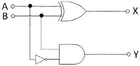
- 가산기
- 감산기
- 반감산기
- 비교기
(정답률: 58%)
16. 다음 중 틀린 것은?
- A+B=B+A
- AㆍB=BㆍA
- A+0=0
- Aㆍ1=A
(정답률: 72%)
17. 다음 그림과 같은 회로와 입력에 계단 전압(step voltage)을 인가할 때 출력에는 어떤 파형의 전압이 나타나겠는가? (단, A는 이상적인 연산증폭기이다.)
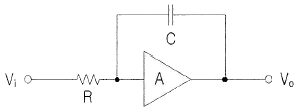
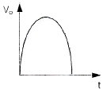
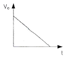
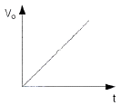
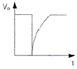
(정답률: 79%)
18. JK Flip-Flop에서 현재 상태의 출력 Qn을 1로 하고, J입력과 K입력이 1일 때 클럭 펄스 CP에 신호가 인가되면 다음 상태의 출력 Qn+1은? (단, 플립플롭의 setup time과 holding time은 만족한다고 가정함.)
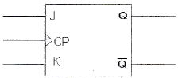
- 부정
- 1
- 0
- Qn
(정답률: 54%)
19. 이상적인 A급 증폭기의 최대효율은?
- 18(%)
- 35(%)
- 50(%)
- 100(%)
(정답률: 75%)
20. 간접 FM변조방식(Armstrong방식)에서의 필수 요소가 아닌 것은?
- 가산기(adder)
- 평형 변조기(balanced modulation)
- 위상천이기(90° phase shifter)
- 진폭제한기(limiter)
(정답률: 77%)
2과목: 무선통신기기
21. 축전기의 취급상 주의할 점이 아닌 것은?
- 축전지 전압이 약 1.8(V), 비중이 1.14이면 방전을 정지하고 곧 충전시킨다.
- 충전시는 일정한 상태에 도달해도 얼마간은 계속 과충전해야 한다.
- 전해액의 비중, 온도는 규정치가 되도록 한다.
- 극판이 전해액 면에서 노출이 되지 않도록 전해액을 보충한다.
(정답률: 100%)
22. 음성신호를 8(kHz)로 표본화한 후 8bit로 부호화하여 실시간으로 전송하기 위해서는 64(kbps)의 속도가 요구된다. 이러한 데이터를 QPSK로 변조한다면 변조속도는 몇 (baud)인가?
- 8000(baud)
- 16000(baud)
- 32000(baud)
- 64000(baud)
(정답률: 93%)
23. 입력 측의 신호 대 잡음비가 50, 출력 측의 신호 대 잡음비가 1이다. 이 증폭기의 잡음지수 NF는 약 얼마인가?
- 10(dB)
- 12(dB)
- 15(dB)
- 17(dB)
(정답률: 77%)
24. 연속적으로 변화하는 아날로그 신호(analog signal)를 펄스부호(pulse code)로 변화시키는데 꼭 필요한 단계가 아닌 것은?
- 부호화
- 압축화
- 표본화
- 양자화
(정답률: 93%)
25. 위성통신 지구국의 기본적인 구성이 아닌 것은?
- 안테나계
- 송수신계
- 자세제어계
- 인터페이스계
(정답률: 74%)
26. 송신기의 출력 회로를 조정하여 컬렉터 직류전압이 2(kV) 컬렉터 질류전류가 200(mA)일 때 컬렉터 출력은? (단, 컬렉터 효율은 60(%)이다.)
- 400(W)
- 240(W)
- 160(W)
- 120(W)
(정답률: 85%)
27. 펄스부호변조(PCM)에서 표본화 하고자하는 연속신호의 최대 주파수를 B(Hz)라고 할 때, 원래 신호를 왜곡 없이 복원하기 위해서 적절한 표본화 속도(sampling rate)는?
- 0.5B
- B
- 1.5B
- 2B
(정답률: 92%)
28. GPS 위치 측정 시 오차 인자 중 영향력(오차범위)이 가장 큰 것은?
- 대류권의 영향
- 전리층의 영향
- 위성의 시계 오차
- 전파경로에 따른 오차
(정답률: 60%)
29. 디지털 정보의 부호화 방법 중 비트 값 1에 비트 시간 만큼의 펄스를 대응시키고, 0에는 대응시키지 않는 방법을 무엇이라 하는가?
- RZ(Return to Zero)
- Biphase 방식(맨체스터 방식)
- Biphase 방식(차등적 맨체스터 방식)
- NRZ(Non Return to Zoro)
(정답률: 93%)
30. 서비스 영역내 이동국에게 부가정보, 특정 이동국에 대한 페이징, 명령 그리고 채널 할당 등의 메시지를 전달하는 채널로, 9600(bps)와 4800(bps) 두 가지 전송속도를 가지는 채널을 무엇이라 하는가?
- 파일럿 채널(Pilot Channel)
- 동기 채널(Sync Channel)
- 호출 채널(Paging Channel)
- 접속 채널(Access Channel)
(정답률: 60%)
31. 다음 중 RC 필터 회로에서 리플 함유율을 작게 하려면?
- R을 작게 한다.
- C를 작게 한다.
- R, C를 모두 작게 한다.
- R과 C를 크게 한다.
(정답률: 75%)
32. CDMA방식에 대한 설명으로 틀린 것은?
- Spread spectrum 기술을 이용한 것이다.
- 광대역의 주파수폭을 필요로 한다.
- 코드의 검출이 어렵기 때문에 통신의 비밀이 보장된다.
- 광대역특성이므로 간섭의 영향도 크다.
(정답률: 59%)
33. 다음 전원설비에 관한 설명 중 틀린 것은?
- UPS는 시스템에 안정된 전원을 공급하는 장치
- 정전압회로는 일정한 크기의 전압을 공급하는 회로
- 컨버터는 직류전압을 교류전압으로 변환하는 장치
- 정류회로는 교류를 정류하여 직류를 얻는 회로
(정답률: 100%)
34. 축전지에서 AH(암페어시)가 나타내는 것은?
- 축전지의 사용가능시간
- 축전지의 용량
- 축전지의 충전전류
- 축전지의 방전전류
(정답률: 80%)
35. 현재 사용 가능한 Inmarsat 위성통신시스템 중 조난 및 안전 통신을 텔렉스로 송수신 할 수 있는 Inmarsat Type은?
- Inmarsat-A
- Inmarsat-C
- Inmarsat-M
- Inmarsat-E
(정답률: 87%)
36. 1(kW)의 송신기 전력이 전송되다가 송신출력이 3(dB)로 떨어졌다. 이 때의 전력은 약 몇 (kW)인가?
- 1
- 0.8
- 0.5
- 0.3
(정답률: 92%)
37. GMDSS의 COSPAS-SARAT와 거리가 먼 것은?
- LUT(Local User Terminal)
- MCC(Mission Control Center)
- NCC(Network Coordination Center)
- 406MHz 위성EPIRB(Emergency Position Indicating Radio Beacon)
(정답률: 94%)
38. 무선통신의 장애요인에 대한 특성 중 틀린 것은?
- 감쇠(attenuation)란 신호가 전파되면서 주파수에 따라 그 크기가 작아지는 것을 말한다.
- 왜곡(distortion)이란 신호가 전파되면서 일그러지는 것을 말한다.
- 잡음(noise)이란 필요한 신호 속에 혼잡되어 정상적인 수신 또는 처리를 방해하는 전기 신호를 말한다.
- 간섭(interference)이란 원하는 신호의 수신을 방해하는 에너지를 말한다.
(정답률: 69%)
39. 다음 중 SSB송심기의 링변조 특성으로 틀린 것은?
- 출력측에는 변조신호의 성분이 나타나지 않는다.
- 입력신호보다 출력신호가 크다.
- 정류소자로서 사용된다.
- 복조회로로도 사용 가능하다.
(정답률: 47%)
40. 변조도가 1인 DSB파를 제곱 검파하면 왜율은 몇 (%)인가?
- 10
- 20
- 25
- 35
(정답률: 86%)
3과목: 안테나공학
41. 수평편파형 수평면 내에서 무지향성 안테나는?
- 휨안테나
- 멀티 스커트 안테나
- 브라운 안테나
- 턴스타일 안테나
(정답률: 88%)
42. 다음 중 주파수대와 주 전자파 통로와의 관계를 나타낸 것으로 틀린 것은?
- 장ㆍ중파대-지표파
- 단파대-대지 반사파
- 초단파대-대지 반사파
- 마이크로파대-직접파
(정답률: 77%)
43. 전자파를 이루는 전계와 자게의 관계를 설명한 것이다. 틀린 것은?
- 전자파는 전계와 자게의 2가지 성분으로 이루어진다.
- 전계와 자계는 시간적으로는 역위상이다.
- 전계와 자게는 공간적으로는 서로 직각이다.
- 전자파는 전계와 자계가 항상 같이 존재한다.
(정답률: 93%)
44. 전리층의 최대 전자밀도가 3.6×1011(개/m3)이고, 송수신정 사이의 거리가 600(km)이다. 전리층의 겉보기 높이가 200(km)라고 할 때 FOT(최적운용주파수)는 약 얼마인가?
- 6.5(MHz)
- 7.6(MHz)
- 8.3(MHz)
- 9.7(MHz)
(정답률: 69%)
45. 임피던스 정합시 발생되는 현상이 잘못된 것은?
- 급전선 손실의 감소
- 안테나 효율의 증가
- 최대전력의 전송
- 송신기 동작의 불안정
(정답률: 93%)
46. 다음 중 도파관의 여진 방법에 해당되지 않는 것은?
- 정전적 결합에 의한 여진
- 전자적 결합에 의한 여진
- 작은 폐루프 안테나에 의한 여진
- Q 변성기에 의한 여진
(정답률: 86%)
47. 다음은 디스콘 안테나의 특징을 설명한 것이다. 옳지 않은 것은?
- 수평면 내에서 무지향성이다.
- 수직면 내에서 단방향성이다.
- 광대역성이다.
- 쌍원추형 안테나를 변형시킨 것이다.
(정답률: 54%)
48. 반파장 다이폴 안테나에서 P(W)의 전력을 복사하고 있을 때, 거리 r(m)만큼 떨어진 곳의 전계강도 E의 식으로 옳은 것은?
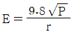
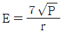
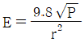
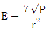
(정답률: 77%)
49. 극단초단파용 안테나의 특징이 아닌 것은?
- 크기를 소형화할 수 있다.
- 고이득을 얻을 수 있다.
- 이득은 안테나의 개구면적과 무관하다.
- 고지향성이다.
(정답률: 100%)
50. 대류권 산란파의 특징이 아닌 것은?
- 시간적, 공간적으로 큰 제약을 받지 않는다.
- 산란현상을 이용하므로 전파손실이 크게 발생한다.
- 짧은 주기의 페이딩이 발생한다.
- 광대역 통신에는 부적합하다.
(정답률: 80%)
51. 다음 중 전자파의 특성에 대한 설명으로 가장 옳은 것은?
- 자유공간에서는 전계와 자계의 진동방향과 직각으로 진행한다.
- 주파수가 높을수록 직진성이 약하다.
- 균일한 매질 중을 진행하는 파는 궁절성이 강하다.
- 전자파는 종파이다.
(정답률: 80%)
52. 평행2선식 급선전에 대한 설명으로 옳지 않은 것은?
- 2개의 도선을 평행으로 가설하여 사용하는 급전선이다.
- 특성임피던스는 선의 굵기와 선간 거리에 의해 결정된다.
- 주로 중파, 단파대의 송신용으로 많이 사용된다.
- 단위 길이당 고주파 저항은 주파수에 비례한다.
(정답률: 50%)
53. 대기층의 동요, 강풍에 의한 기단의 변화, 강한 주 전파에 대한 약한 굴절파의 간섭에 의하여 발생하는 현상은?
- 산란형 페이딩
- 신틸레이션 페이딩
- 감쇠형 페이딩
- 덕트형 페이딩
(정답률: 85%)
54. 안테나의 손실저항이 발생하는 원인이 아닌 것은?
- 복사저항에 의한 손실
- 연장선륜 저항에 의한 손실
- 도체 저항에 의한 손실
- 유전체에 의한 손실
(정답률: 80%)
55. 다음 중 위성통신 지구국 용으로 적합한 안테나는?
- 대수주기 안테나
- 애드콕 안테나
- 헬리컬 안테나
- 카세그레인 안테나
(정답률: 100%)
56. 다음 중 진행파와 정재파에 관한 설명으로 틀린 것은?
- 무한히 긴 선로에서는 진행파만 존재하고 반사파는 없게 된다.
- 정재파는 반사파와 진행파가 혼합되어 있는 형태이다.
- 원거리 전파시 전송손실은 정재파보다 진행파가 적다.
- 공중선으로 사용할 경우 진행파는 양방향성, 정재파는 단일 지향성이다.
(정답률: 47%)
57. 다음 중 델린저 현상에 관한 설명으로 잘못된 것은?
- 지구전역에 한하여 발생한다.
- 주간에 발생한다.
- 돌발적으로 발생하여 10분 혹은 수십분 계속된다.
- 1.5~20(MHz)정도의 낮은 주파수의 전파에 영향이 심하다.
(정답률: 75%)
58. 특성 임피던스가 75(Ω)인 선로에 120(Ω)인 부하 임피던스를 접속할 때의 정재파비는 얼마인가?
- 0.1
- 0.6
- 1.6
- 2.6
(정답률: 50%)
59. 반파장 다이폴 안테나와 피측정 안테나에서 동일 복사 전력으로 복사시킨 전파의 최대 복사 방향에서의 전계강도가 각각 5(mV/m)와 25(mV/m)이었다면, 피측정 안테나의 상대이득은 약 몇 (dB)인가?
- 7(dB)
- 14(dB)
- 20(dB)
- 25(dB)
(정답률: 54%)
60. 전자파가 전리층을 향하여 입사되었다. 이 때 일어나는 현상과 관계없는 것은?
- 라디오덕트 현상
- 굴절현상
- 편파현상
- 감쇠현상
(정답률: 93%)
4과목: 통신영어 및 교통지리
61. 다음 중 나라 이름과 그 수도가 잘못 짝지어져 있는 것은?
- LYBIA/TRIPOLI
- NORWAY/OSLO
- BELGIUM/ANTWERPEN
- SENEGAL/DAKAR
(정답률: 85%)
62. Choose the correct Korean version for the underlined parts. "All stations, whatever their purpose, must be established and operated in such a manner as not to cause harmful interference to the radio services"
- 목적을 위하여
- 목적을 기필코 달성하기 위하여
- 목적 여하를 불문하고
- 목적에 따라
(정답률: 79%)
63. Choose the right one for the blank, "The urgency signal shall be sent only on the authority of the master or the person responsible for the ship, aircraft, or other vehicle carrying the ( ) station"
- land
- portable
- fixed
- mobile
(정답률: 62%)
64. 아래의 문장이 뜻하는 것은?
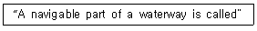
- mark
- Point
- azimuth
- fairway
(정답률: 75%)
65. 다음 중 INMARSAT 해안지구국과 그 담당해역을 짝지은 것으로 틀린 것은?
- Thermoptylae/Pacific Ocean
- Lakhdaria/Atlantic Ocean
- Yamaguchi/Pacific Ocean
- Eik/Indian Ocean
(정답률: 43%)
66. Choose the best definition of certain terms which would be appropriate in the following sentence. "A radiocommunication service in which the transmissions are intended for direct reception by the general public. This service may include sound transmissions, television transmissions or other types of transmission"
- rediodetermination service
- broadcasting service
- satellite service
- public correspondence service
(정답률: 60%)
67. 우리나라 콘데이너 정기 화물선의 태평양 연안의 기항지가 아닌 곳은?
- Vancouver항
- Auckland항
- Seattle항
- ST.Johns항
(정답률: 67%)
68. 우리나라에 내습하는 TYPHOON은 주로 어느 지역에서 발생하는가?
- Hawaiian Is.
- Marians Is.
- Fuji Is.
- Solomon Is.
(정답률: 72%)
69. Setect appropriate one in the blank in following Radio Regulation; "In the maritime mobile service, no assignments shall be made on the frequency 518(kHz) other than for transmission by coast stations of meteorological and navigational warnings and urgent information to ships by means of automatic NBDP telegraphy ( )."
- International NAVAREA
- Digital selective calling
- International NAVTEX System
- Enhanced Group Call
(정답률: 79%)
70. Incheon-Shimizu 간의 최단거리 항로상에 위치해 있는 주요항구들이다. 틀린 것은?
- Otaru
- Yawata
- Wakayama
- Yokkaich
(정답률: 84%)
71. 욕지도에서 강구까지의 통신권은 어느 무선국의 범위인가?
- 여수
- 부산
- 목포
- 강릉
(정답률: 84%)
72. 조난 시 무선전화의 절차용어에 해당하는 무선전신의 약 부호가 서로 틀린 것은?
- SEELONCE FEENEE-QUN
- SEELONCE MAYDAY-QRT SOS
- SEEKIBCE DISTRESS-QRT DISTRESS
- PRUDONCE-QUZ
(정답률: 72%)
73. Choose the best definition of certain terms which would be appropriate in the following sentence. "A mobile service between cast stations and ship stations, or between ship stations, or between associated on-board communication stations; survival craft stations and emergency position-indicating radiobeacon stations may also participate in this service."
- maritime service
- maritime mobile service
- coastal mobile service
- oceanic mobile service
(정답률: 100%)
74. Select the wrong one of the following phonetic alphabets, its syllables to be emphasized are underlined.
- Q...KEH BECK
- R... ROW ME OH
- O...OSS CAH
- H...HOH TELL CAH
(정답률: 74%)
75. Choose the wrong translation of those following ship terms.
- 좌현:port
- 홀수:draft
- 선미:scuttle
- 선수:bow
(정답률: 100%)
76. Corinth Cannal은 다음 어느 국가의 소속인가?
- Greece
- Belgium
- Germany
- Sweden
(정답률: 100%)
77. Choose the one best answer to the following question. "What are the urgency signals to be used in rediotelephony?"
- It is three repetitions of the word PAN.
- It is two repetitions of the word PAN.
- It should consist of urgency signal PAN PAN, spoken three times.
- It consists of the words PAN PAN PAN.
(정답률: 93%)
78. 온난한 기단이 한랭한 기단 위로 올라가서 생기는 전선으로 이 전선부근에는 비가 오는 지역이 넓다. 이러한 기상전선은?
- Warm Front
- Cold Front
- Stationary Front
- Occluded Front
(정답률: 87%)
79. 해상안전정보 유포를 위한 NAVTEX 해역에서 우리나라는 몇 구역에 속하는가?
- 제6구역
- 제9구역
- 제11구역
- 제16구역
(정답률: 93%)
80. Which is the correct translation into Korean? "The operation of a broadcasting service by a ship station at sea is prohibited."
- 선박국에 의한 해상에서의 방송업무 운용은 이를 금지한다.
- 선박국은 항해 중 방송업무를 할 수 있다.
- 선박국은 항해 중 방송업무를 해야 한다.
- 선박국은 항해중일 때에만 방송업무를 금지한다.
(정답률: 79%)
5과목: 전파관계법규
81. 다음 괄호 안에 들어갈 내용으로 가장 적합한 것은?
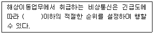
- 조난통신
- 긴급통신
- 안전통신
- 업무통신
(정답률: 100%)
82. 우리나라가 ITU에 정식으로 가입한 해는?
- 1950년
- 1949년
- 1952년
- 1954년
(정답률: 93%)
83. 전파법이 규정하고 있는 용어의 정의로서 바르게 표현된 것은?
- 무선설비라 함은 전파를 보내거나 받는 전파적 설비를 말한다.
- 무선국이라 함은 전파를 보내거나 받는 전기적 설비를 말한다.
- 위성망이라 함은 우주국과 지구국으로 구성된 통신망의 총체를 말한다.
- 무선종자라 함은 무선설비를 조작하거나 공사하는 자를 말한다.
(정답률: 77%)
84. 전파규칙(RR)에서 주파수의 분배를 위하여 세계를 몇 개의 지역으로 구분하였다. 우리나라가 속하는 지역은?
- 제1지역
- 제2지역
- 제3지역
- 제4지역
(정답률: 80%)
85. 현행 전파법 중 무선 설비 기준의 근본이 되고 있는 국제 규정은?
- SOLAS:해상 인명 안전 조약
- ICAO:국제 민간 항공 기구
- ITR:전기 통신 규칙
- RR:전파규칙
(정답률: 93%)
86. 무선설비로 음란한 통신을 한 자에 대한 벌칙은?
- 1년 이하의 유기징역
- 2년 이하의 징역 또는 1000만원 이하의 벌금
- 3년 이하의 징역 또는 2000만의 이하의 벌금
- 100만원 이하의 벌금
(정답률: 40%)
87. 변경검사를 면제 또는 생략할 수 있는 경우가 아닌 것은?
- 준공검사를 받고 운용하고 있는 무선국의 무선설비를 변경하는 경우
- 중계기능만 수행하는 송ㆍ수신기로서 회로변경 없이 전파의 형식을 변경하는 경우
- 방송신호를 직접 수신하여 중계하는 기기로 회로변경 없이 수신주파수를 변경하는 경우
- 무선설비의 변경을 수반하지 아니하는 무선국의 목적 및 통신의 상대방을 변경하는 경우
(정답률: 58%)
88. 주파수할 당시 심사 하여야 할 사항이 아닌 것은?
- 전파자원 이용의 효율성
- 신청자의 재정적 능력
- 신청자의 기술적 능력
- 신청자의 개인적 능력
(정답률: 74%)
89. 다음 중 ITU의 공용어 및 업무용어가 아닌 것은?
- 영어, 프랑스어
- 중국어, 러시아어
- 아랍어, 스페인어
- 라틴어, 그리스어
(정답률: 86%)
90. 다음 중 무선국에 배치하여도 되는 무선종사자의 경우는?
- 금치산자
- 한정치산자
- 국가보안법을 위반하여 금고이상의 선고를 받고 형집행중인 자
- 선박안전법을 위반한 자
(정답률: 70%)
91. 통신보안상 단파통신의 취약점 설명 중 가장 알맞은 것은?
- 원거리에서 비교적 안전하게 도청할 수 있다.
- 주파수가 널리 사용되므로 혼신이 많다.
- CDMA 방식의 핸드폰으로 간단하게 도청할 수 있다.
- 단파수신기는 누구나 만들 수 있다.
(정답률: 85%)
92. 디지털선택호출경보를 이용할 수 있는 최소한 하나의 초단파대 해안국의 무선전화 통신범위 안에 해역은?
- A1해역
- A2해역
- A3해역
- A4해역
(정답률: 100%)
93. 세계전파통신회의(WRC)의 주요 의제에 포함되지 않는 것은?
- 전파규칙의 부분적 개정
- 전파통신회의의 권한 내에 범세계적인 성격의 문제
- 전파통신총회 조직 통폐합
- 전파규칙위원회(RRB) 활동에 관한 안건 검토
(정답률: 92%)
94. 다음 중 전파감시 업무에 해당되지 않은 것은?
- 혼신을 일으키는 전파의 탐지
- 허가받지 않은 무선국에서 발사한 전파의 탐지
- 무선국에서 사용하고 있는 주파수의 편차대역폭 등 전파의 품질 측정
- 국가정보원에서 의뢰한 무선국의 전파감시
(정답률: 62%)
95. 통신 보안이란 무엇인가?
- 통신내용을 감청 분석하는 것이다.
- 통신내용의 누설을 방지하는 것이다.
- 통신소 위치를 탐지하는 것이다.
- 통신장비를 안전하게 보존하는 것이다.
(정답률: 100%)
96. 표준 방송국의 허가유효기간은?
- 1년
- 2년
- 5년
- 무기한
(정답률: 24%)
97. 통신보안 관리책임자의 지정에 대한 설명 중 틀린 것은?
- 시설자는 무선국이 1일 8시간 이상 운용되는 경우에는 부책임자를 따로 지정할 수 있다.
- 2개 이상의 통신망이 동일 무선국에서 운용되고 있는 경우에는 책임자를 2인 이상 지정하여야 한다.
- 전기통신역무를 제공받기 위하여 개설한 무선국의 시설자는 책임자를 지정할 필요가 없다.
- 시설자는 1개의 통신망에 대하여 지휘감독 할 수 있는 부서의 관리직에 있는 자로 1인의 책임자를 지정하여 관리하여야 한다.
(정답률: 65%)
98. 다음 괄호 안의 들어갈 적당한 말은?
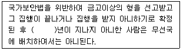
- 1년
- 2년
- 3년
- 5년
(정답률: 94%)
99. 다음 중 통신정보의 특징으로 가장 적합한 설명은?
- 통신내용을 은닉하기 위한 것이다.
- 통신으로 전달되는 정보로서 주로 통신시설에 관한 정보이다.
- 통신정보는 음성적이고 공격적인 수단을 필요로 한다.
- 통신정보는 양성적이고 방어적인 수단을 필요로 한다.
(정답률: 69%)
100. 다음 중 “상대통신망에 개입하여 상대를 오인토록 하고 비밀을 탐지하려는 수단”을 나타내는 것은?
- 기만통신
- 비밀통신
- 안전통신
- 긴급통신
(정답률: 95%)